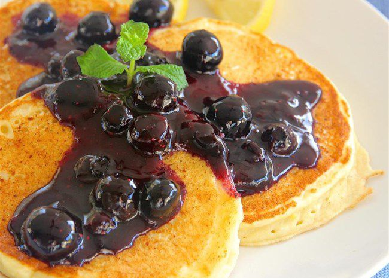

Pancakes

Description
After tweaking this recipe for several years, this recepi is the one!
Ingredients
- 2 egs
- 2,5 dl milk
- 1,5 dl flour
- 0,25 ts salt
Directions
- Mix flour and salt
- Whisk in milk into the flour mix
- Whisk in two egs
- Let the batter rest for an hour
- Fry the pancakes in a well-heated frying pan